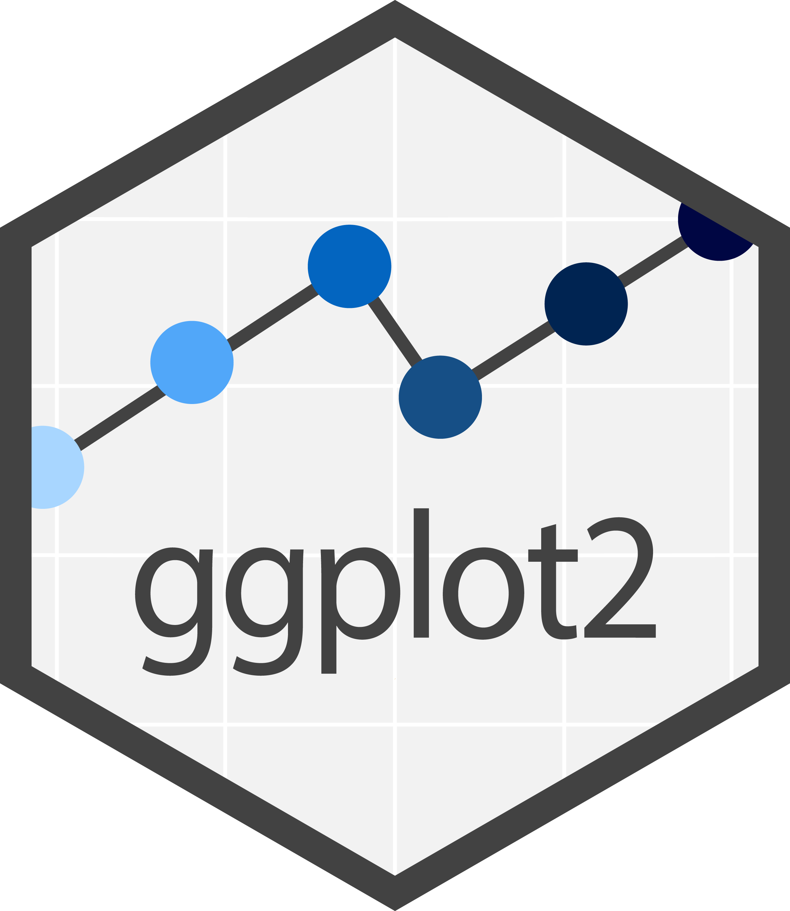
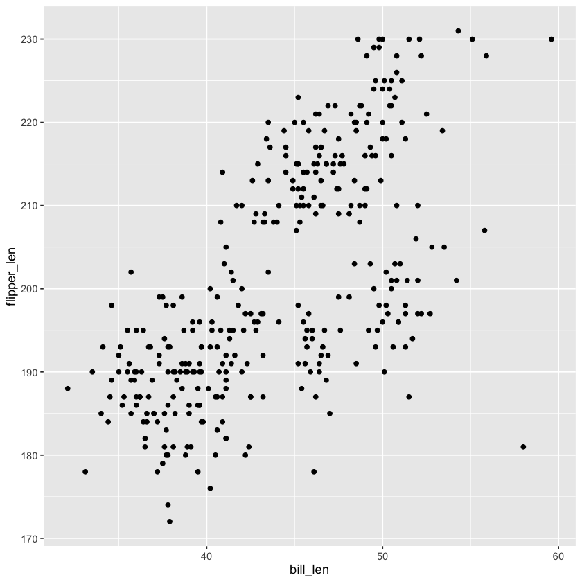
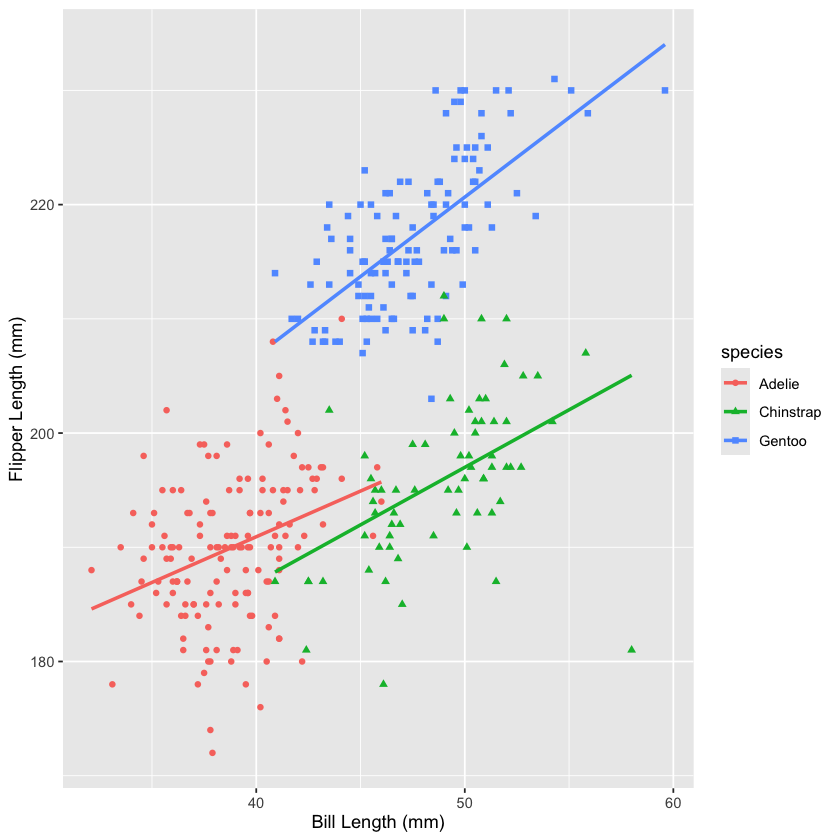
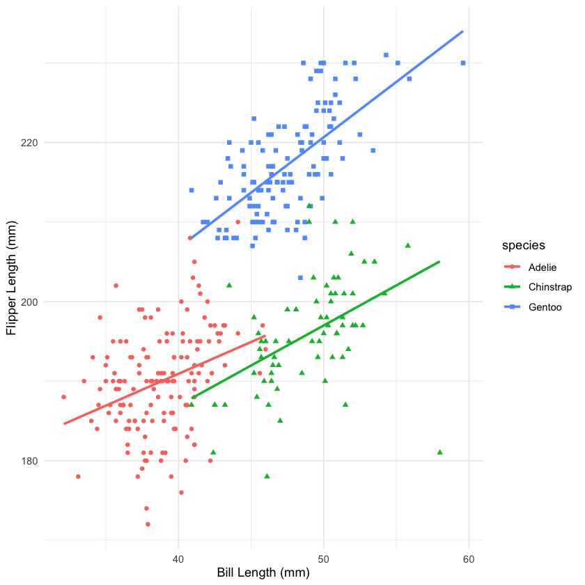
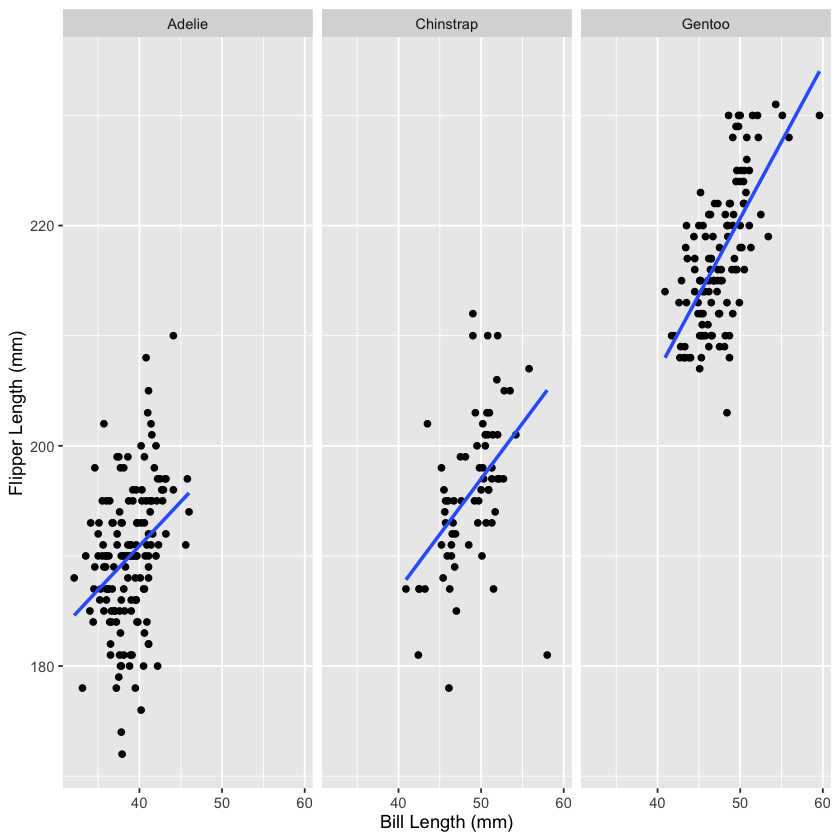

Visualisation with ggplot2#


The last tidyverse package we will look at this week is ggplot2 which is designed to make (tidy) data visualisation more effective. Let’s look at a simple scatter plot to get a sense of how ggplot() works:
library(ggplot2)
ggplot(penguins,aes(x = bill_len, y = flipper_len)) +
geom_point()
Warning message:
“Removed 2 rows containing missing values or values outside the scale range
(`geom_point()`).”


The ggplot() function accepts the data you want to plot as the first argument (in this case penguins). The we specify the aesthetics (aes) which connect variables in the data to visual properties of the plot. In this case we have specified that we want to map bill_len on to the x axis and flipper_len on to the y axis. Then we add a geometry, in this case points using + geom_point().
Note the warning message above, this happened because there are NAs in the data. So before we go any further let’s deal with those.
clean_penguins <- filter(penguins,
!is.na(bill_len),
!is.na(flipper_len))
Now let’s add some axis labels and colour the points by species of penguin:
ggplot(clean_penguins,aes(x = bill_len, y = flipper_len, colour = species)) +
geom_point()+
xlab("Bill Length (mm)")+
ylab("Flipper Length (mm)")

This is the same plot as before with a couple of tweaks. We have added colour to the aesthetics and mapped it onto the variable species. Then we added two additional layers which are the x axis labels and y axis labels. We can improve it further by adding more layers and aesthetics. Let’s make it more accessible by using shapes as well as colours. We can also add a trend line for each species.
ggplot(clean_penguins,aes(x = bill_len, y = flipper_len, colour = species, shape = species)) +
geom_point()+
xlab("Bill Length (mm)")+
ylab("Flipper Length (mm)")+
geom_smooth(method = "lm", se = FALSE)
`geom_smooth()` using formula = 'y ~ x'


Now we have shape mapped on to species as well as colour and we have added a linear trend line for each group.
Themes#
The colours and fonts used in the plot are the defaults for ggplot(), but you can easily try different styles by adding a theme layer:
ggplot(clean_penguins,aes(x = bill_len, y = flipper_len, colour = species, shape = species)) +
geom_point()+
xlab("Bill Length (mm)")+
ylab("Flipper Length (mm)")+
geom_smooth(method = "lm", se = FALSE)+
theme_minimal()
`geom_smooth()` using formula = 'y ~ x'


theme_minimal() does what the name suggests. There are other themes available to ggplot() and there are packages that provide yet more. You can even make your own bespoke themes.
Faceting plots#
If you want a multi-panel plot, this is also easily achieved. Let’s have a separate scatter plot for each species.
ggplot(clean_penguins,aes(x = bill_len, y = flipper_len)) +
geom_point()+
xlab("Bill Length (mm)")+
ylab("Flipper Length (mm)")+
geom_smooth(method = "lm", se = FALSE)+
facet_wrap(~species)
`geom_smooth()` using formula = 'y ~ x'


All we have done here is take species out of the aesthetic and given it instead to the facet_wrap() layer. This means ggplot will produce as many panels as there are distinct values in the species variable. Note that by default, ggplot() has given each panel the same scales to facilitate comparison.
geoms#
So far, we have only used the geom_point() and geom_smooth() geometries, but there are many different geoms to choose from, including:
geom_histogram()geom_boxplot()geom_line()
Different geoms will require different mappings in the aes(). A histogram only needs a variable to be mapped to the x axis for instance.
ggplot(clean_penguins,aes(x = bill_len, fill = species)) +
geom_histogram(binwidth = 4)+
xlab("Bill Length (mm)")+
facet_wrap(~species)

The same principles apply whatever the geom you are using. aes() supplies the variable : plot mapping, and then we add various layers to get the end result we want. I have used fill rather than colour here. Although colour would have worked fine, it refers to the outline colour, while fill refers to the inner colour of a shape. So fill tends to work better with a histogram.
Plotting summary stats#
Often we want to plot means and error bars, not just raw data points. There are two main options if that is your objective. You could use group_by() and summarise() to create your summary statistics and then pass that summary data to ggplot().
Alternatively, there are also some summarising capabilities built in to ggplot() if you are working with the raw data. Let’s look at body_mass per species to demonstrate this:
ggplot(clean_penguins,aes(species,body_mass,colour = species))+
geom_jitter()+
xlab("Species")+
ylab("Body Mass (g)")

Here we have created a plot with species mapped to the x axis and body_mass mapped to the y axis. I have also mapped species on to colour so that it is clear which species each dot belongs to. I have used the geom_jitter() geom, which is the same as geom_point() but it has added some random noise to the x position, so that all the data points are not on top of each other. Try running the above code with geom_point() instead to see the difference.
Now, if I want to plot a mean data point for each species I can add a stat_summary() layer:
ggplot(clean_penguins,aes(species,body_mass,colour = species))+
geom_jitter(alpha = 0.5, width = 0.2)+
xlab("Species")+
ylab("Body Mass (g)")+
stat_summary(fun = mean, geom = "point", size = 2, colour = "black", shape = 19)+
stat_summary(fun.data = mean_se, geom = "errorbar", width = 0.1, colour = "black")

For this plot I have used the stat_summary() layers to add a mean data point and error bars showing the standard error (SE). You may have noticed I also added an alpha parameter to geom_jitter(). This controls the transparency of the points. Making them a bit transparent helps give prominence to the means and it allows us to see where data points overlap. I also set the width parameter so that there is a little more space between the clouds of dots.